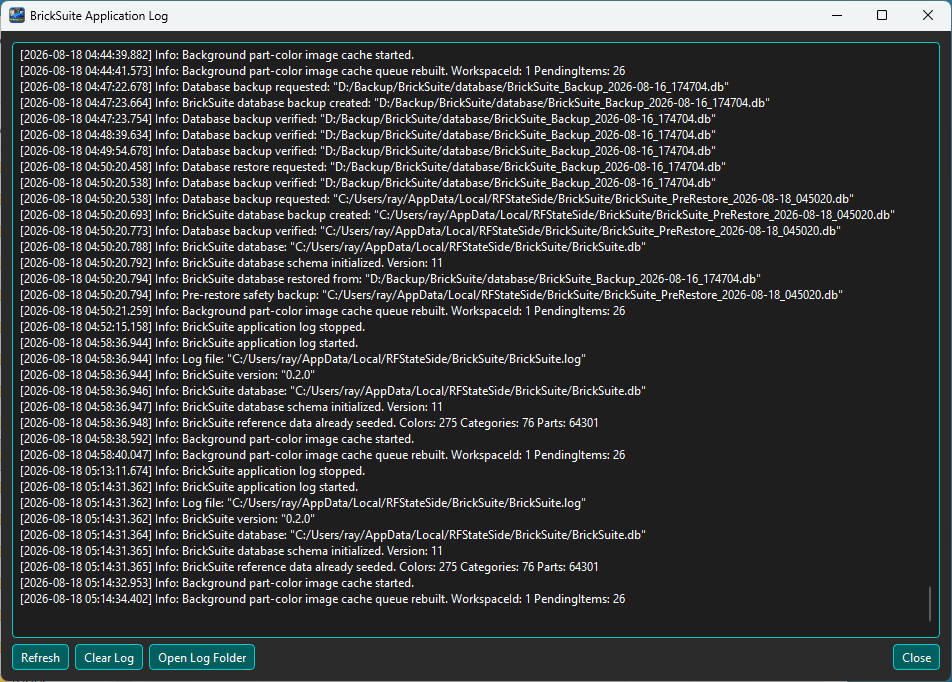
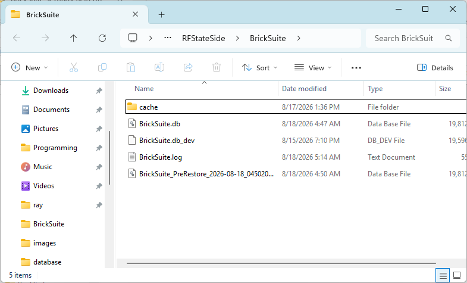
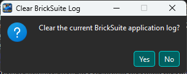

The Application Log records useful information about BrickSuite activity. It can help confirm that an operation completed normally and provide diagnostic information when something unexpected occurs.
The log is intended to support troubleshooting without requiring you to inspect the BrickSuite database or development tools.
Open the Application Log from BrickSuite to review recent entries.

Entries are timestamped and assigned a severity such as Info, Warning, or Critical. The message describes the operation or condition that BrickSuite recorded.
Normal log activity can include application startup and version information, database initialization, imports and exports, Build operations, Backup / Restore activity, and other significant actions.
Choose Open Log Folder when you need access to the underlying log file outside the BrickSuite viewer.

The raw log file can be useful when preserving diagnostic information before clearing the viewer or when a log needs to be reviewed outside BrickSuite.
If you are sharing a log for troubleshooting, review it first and share only the information needed to investigate the problem.
Choose Clear Log when you intentionally want to remove the existing application-log entries and begin with a clean diagnostic record.

BrickSuite asks for confirmation before clearing the log. If the existing entries may be useful later, preserve the log file before confirming the operation.
When a problem can be reproduced consistently, a clean log can make the relevant events much easier to identify:
Preserve the current log if needed
|
Clear Log
|
Reproduce the problem once
|
Open Application Log
|
Review the new entries
This produces a smaller diagnostic record focused on the actions immediately surrounding the problem instead of requiring you to search through unrelated earlier activity.
Start with entries at the time the problem occurred. Look for Warning or Critical messages and for Info entries immediately before them. The preceding normal operation often provides useful context for understanding what BrickSuite was doing when the problem occurred.
When reporting a problem, it is helpful to describe the steps that produced it and preserve the corresponding log information.
The Application Log can help confirm Backup / Restore operations or provide diagnostic information if one fails. The log itself is not a substitute for a database backup.
See Backup / Restore for protecting the BrickSuite database.
Use the two histories for different questions:
Application Log What was BrickSuite doing? Did an operation report a warning or failure? Inventory History What happened to this physical inventory? Was it imported, moved, lost, or otherwise changed?
See My Inventory for inventory movement history.
Troubleshooting | Backup / Restore | Settings | My Inventory